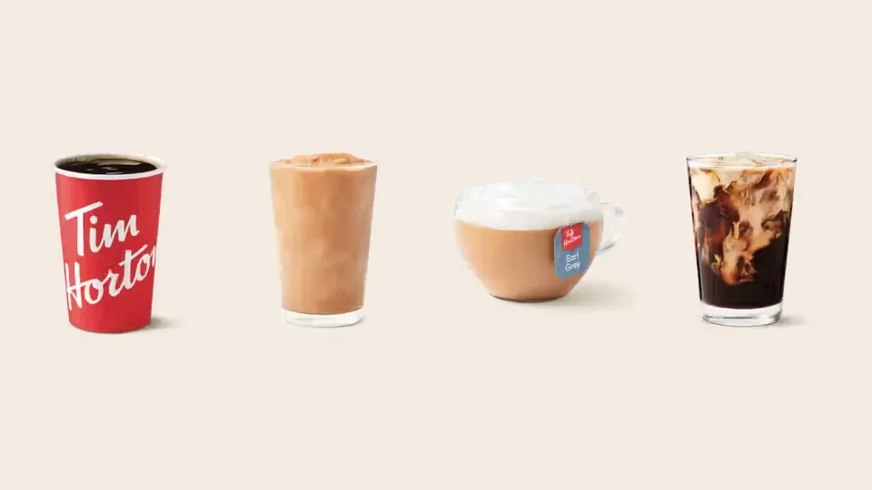
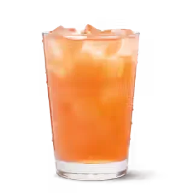

Full Menu / Blog / Best Tim Hortons Drinks

The best Tim Hortons drinks are the Double-Double and the Original Iced Capp, which were Canada's most-ordered hot and cold drinks of 2025. After those, try the French Vanilla, Vanilla Cream Cold Brew, London Fog and White Hot Chocolate. Each of the six costs under $4 in a medium.
Most "best Tim Hortons drinks" lists online mix in seasonal drinks, US-only items and collabs that ended years ago. Every drink below is on the current Canadian menu, so you can order all of them today. Prices are Canadian menu prices before tax as of October 2026, and they can vary a little by location. Calories come from Tim Hortons' Canadian Nutrition Guide (August 2025) where it lists the drink.
The list runs from the classics Canadians order most, through cold brew and tea, to frozen and fruit drinks. A comparison table at the end sorts all 13 by price, calories and what each one is best for.
1. Double-Double (Best Overall)

The Double-Double is the best Tim Hortons drink for most people, and it was the most-ordered hot drink in Canada in 2025. It is Original Blend brewed coffee with two creams and two sugars. The Dictionary of Canadianisms on Historical Principles traces the term to 1985.
A small is $1.59 and an extra large is $2.35. The cream and sugar grow with the cup, so a medium is 200 calories and an extra large is 300 calories with 34 g of sugar. If that is too sweet, order a "regular" (one cream, one sugar) for 100 calories in a medium.
2. Original Iced Capp (Best Cold Drink)

The Original Iced Capp is the best cold drink at Tim Hortons, and it was Canada's most-ordered cold drink of 2025. It is a frozen, blended coffee drink made with cream, and it has been on the menu since the 1990s.
It costs $3.29 for a small and $4.29 for a large, with 260 to 430 calories. It tastes more like a coffee milkshake than an iced coffee. If you want something lighter, the Original Iced Coffee costs less ($2.29 to $2.89) and has 120 to 240 calories.
3. French Vanilla (Best Sweet Hot Drink)

The French Vanilla is the best pick if you want a hot drink that tastes like dessert but costs less than a latte. It is a sweet, creamy vanilla cappuccino-style drink with a mild coffee taste.
It runs from $2.69 for a small to $3.59 for an extra large, with 260 to 430 calories from small to large. That is twice the calories of a medium Double-Double, so it works better as a treat than as a daily order.
4. Vanilla Cream Cold Brew (Best Cold Brew)

The Vanilla Cream Cold Brew is the smoothest coffee on the menu, and it is the best choice if hot coffee tastes too sharp to you. Cold brew is steeped slowly in cold water, which makes it less acidic. Tim Hortons then tops it with vanilla-flavoured cream.
It costs $2.99 to $3.99. The plain Original Cold Brew underneath has 120 to 240 calories before the vanilla cream goes on. Three of the five top-ranking drink lists we checked include it, and one ranks it the best cold drink at Tims.
5. Roasted Hazelnut Cold Brew with Espresso Cold Foam (Best for Cold Foam Fans)

This is the cold brew to order if you want more coffee flavour than the vanilla version. It is cold brew with roasted hazelnut flavour, topped with a cold foam made with espresso, so you get a nutty drink with extra coffee taste on top.
It is $3.49 to $4.49, the same price as the Caramel Toffee and Toasted Marshmallow cold foam versions. Several "best of" lists still recommend a Roasted Hazelnut Latte. This cold brew is how you get the same hazelnut flavour on the current menu.
6. London Fog (Best Tea)

The London Fog is the best tea drink at Tim Hortons and a good order if you want something warm with less caffeine than coffee. It is Earl Grey tea topped with steamed, frothed milk. The bergamot in Earl Grey gives it a light citrus note.
It costs $3.29 to $4.29, which is more than double the price of a steeped tea. For a cheaper version, order an Earl Grey tea with vanilla and milk. Our secret menu guide shows exactly how to ask for it.
7. White Hot Chocolate (Best Non-Coffee Hot Drink)

The White Hot Chocolate is the best hot drink at Tim Hortons for anyone who doesn't drink coffee. It is sweet and creamy, and kids and adults both order it, especially in winter.
It costs $2.39 to $3.19, the same as the regular Hot Chocolate. It is also the base for several fan hacks. Staff can steep a tea bag in it, which is how the chai and "cereal milk" Earl Grey versions in our secret menu guide are made.
8. Mocha Iced Latte (Best Iced Latte)

The Mocha Iced Latte is the best iced latte on the menu. It has espresso, milk and chocolate over ice, and it tastes balanced instead of syrupy.
It costs $3.49 to $4.49. A plain Original Iced Latte has 150 to 250 calories, and the mocha flavour adds to that. For an iced espresso drink with almost no sugar, the Unsweetened Iced Latte has 90 to 140 calories.
9. Caramel Toffee Iced Capp (Best Flavoured Iced Capp)

The Caramel Toffee Iced Capp is the best flavoured Iced Capp. It keeps the frozen coffee base of the original and adds caramel and toffee for a buttery, sweeter taste.
Every flavoured Iced Capp costs $3.99 to $4.99, which is 70 cents more than the original in each size. Flavoured Iced Capps also have far more calories than the original. A Vanilla Iced Capp, for example, has 440 to 660 calories.
10. OREO Double Stuf Iced Capp (Best Dessert Drink)

The OREO Double Stuf Iced Capp is the drink to order when you want dessert in a cup. It blends cookie flavour and crumbs into the Iced Capp, so it is closer to a milkshake than a coffee.
It costs the same as the other flavoured Iced Capps ($3.99 to $4.99). For a chocolate version, the OREO Mocha Iced Capp is the same price.
11. Vanilla Creamy Chill (Best Frozen Drink Without Coffee)
The Vanilla Creamy Chill is the best frozen drink for kids or anyone who skips coffee. It is like an Iced Capp without the coffee: a blended vanilla drink that tastes like a soft-serve milkshake.
It costs $3.99 to $4.99, and it also comes in Chocolate and Caramel Toffee. It is one of the most expensive drinks on the menu, so share a large with someone if you only want a few sips.
12. Peach Lemonade Quencher (Best Fruit Drink)

The Peach Lemonade Quencher is the best fruit drink at Tim Hortons, and a caffeine-free choice in summer. Tim Hortons says its Real Fruit Quenchers are made from real fruit juice from concentrate. This one mixes peach with lemonade.
It costs $2.29 to $3.29. Quenchers also come frozen and sparkling, and in other flavours such as Strawberry Watermelon and Wildberry Hibiscus.
13. Frozen Lemonade (Best Budget Cold Drink)

The Frozen Lemonade is the cheapest frozen drink worth ordering, starting at $2.39 for a small. Tim Hortons launched it on April 16, 2012, in original and raspberry flavours.
A large is $3.39, about a dollar less than a large Original Iced Capp. It has no caffeine. Our secret menu guide has two Frozen Lemonade hacks, Lemon Meringue and Triple Berry.
Best Tim Hortons Drinks by Price and Calories
This table puts all 13 drinks side by side. Prices are Canadian, before tax, from small to the largest size. Calories are from the August 2025 Canadian Nutrition Guide where it lists the drink. "n/l" means the guide we used does not list that drink.
| # | Drink | Best for | Price (CAD) | Calories |
|---|---|---|---|---|
| 1 | Double-Double | Everyday coffee | $1.59–$2.35 | 130–300 |
| 2 | Original Iced Capp | Cold coffee treat | $3.29–$4.29 | 260–430 |
| 3 | French Vanilla | Sweet hot drink | $2.69–$3.59 | 260–430 (S–L) |
| 4 | Vanilla Cream Cold Brew | Smooth, low-acid coffee | $2.99–$3.99 | 120–240 before cream |
| 5 | Roasted Hazelnut Cold Brew w/ Espresso Cold Foam | Strong, nutty cold coffee | $3.49–$4.49 | n/l |
| 6 | London Fog | Tea lovers | $3.29–$4.29 | n/l |
| 7 | White Hot Chocolate | No coffee, hot | $2.39–$3.19 | n/l |
| 8 | Mocha Iced Latte | Iced espresso | $3.49–$4.49 | 150–250 before mocha |
| 9 | Caramel Toffee Iced Capp | Flavoured Iced Capp | $3.99–$4.99 | n/l |
| 10 | OREO Double Stuf Iced Capp | Dessert | $3.99–$4.99 | n/l |
| 11 | Vanilla Creamy Chill | Frozen, no coffee | $3.99–$4.99 | n/l |
| 12 | Peach Lemonade Quencher | Fruit, no caffeine | $2.29–$3.29 | n/l |
| 13 | Frozen Lemonade | Cheap summer drink | $2.39–$3.39 | n/l |
If you want the cheapest drink, a single espresso is $1.49 and a small brewed coffee is $1.59. For the fewest calories, order black coffee or an Americano. A small black brewed coffee has 3 calories.
Popular Picks We Left Off (and Why)
Other "best Tim Hortons drinks" lists rank several drinks you can't order on the Canadian menu right now:
- Mint Chocolate Mocha and Hershey's S'mores Iced Capp are seasonal. Check our holiday menu guide when winter drinks return.
- "The Biebs" French Vanilla Cold Brew was a limited-time drink from the Justin Bieber "Timbiebs" collaboration and is not on the current menu.
- Strawberry Frozen Lemonade, Strawberry Creamy Chill and Iced Protein Latte are not on the current Canadian menu we track. The protein latte appears in US coverage.
- The Gretzky / "The 99" is a fan hack, not a menu item. Our secret menu guide shows how to order it.
Frequently Asked Questions
What is the most popular drink at Tim Hortons?
The Double-Double is the most popular drink at Tim Hortons. It was Canada's most-ordered hot drink in both 2024 and 2025. The Original Iced Capp was the most-ordered cold drink of 2025.
What is Tim Hortons most famous for?
Tim Hortons is most famous for its coffee and donuts. In 2025, its most-ordered items in Canada were the Double-Double, the Iced Capp, the Apple Fritter donut and the Chocolate Glazed Timbit.
What is the cheapest drink at Tim Hortons?
A single espresso is the cheapest drink at Tim Hortons, at $1.49. A small brewed coffee costs $1.59, and a small steeped tea costs $1.79. All prices are Canadian, before tax.
How much do Tim Hortons drinks cost?
Tim Hortons drinks in Canada cost from $1.49 for a single espresso to $4.99 for a large flavoured Iced Capp or Creamy Chill. Most lattes are $3.19 to $4.49, and most iced coffees and cold brews are $2.29 to $3.99.
What is the lowest-calorie drink at Tim Hortons?
Black brewed coffee is the lowest-calorie drink at Tim Hortons, with 3 to 5 calories depending on size. For a milk drink, a small Cappuccino has 80 calories and an Unsweetened Iced Latte has 90 to 140.
Which Tim Hortons drinks have no caffeine?
Real Fruit Quenchers and Frozen Lemonade have no caffeine. The Creamy Chills are made without coffee. Hot chocolate drinks have a small amount of caffeine from the cocoa, but much less than coffee.
How much caffeine is in a Tim Hortons coffee?
A medium Tim Hortons brewed coffee has about 205 mg of caffeine, and an extra large has about 330 mg. These are estimates from caffeine data Tim Hortons published in 2008. Health Canada suggests healthy adults keep caffeine under 400 mg a day.
What sizes do Tim Hortons drinks come in?
Hot brewed drinks come in small (10 oz), medium (14 oz), large (20 oz) and extra large (24 oz). Espresso drinks and iced drinks stop at large. Tim Hortons resized its cups in 2012, so today's small is the old medium.
What are good Tim Hortons drinks for kids?
The Vanilla Creamy Chill, Hot Chocolate, White Hot Chocolate and the Real Fruit Quenchers are the best kids' picks because they are made without coffee. A small Hot Chocolate is $2.39.
Is the Iced Capp the same as an iced coffee?
No. An Iced Capp is a frozen, blended drink made with cream, while an iced coffee is brewed coffee served over ice. A small Iced Capp has 260 calories and a small Original Iced Coffee has 120.
Are Tim Hortons drinks the same in the US?
No. The US menu and prices are different from Canada's, and some drinks are sold in only one country. Everything on this list is from the Canadian menu. See our Tim Hortons in the US guide for the differences.
This is an independent, unofficial guide. It is not affiliated with, endorsed by, or sponsored by Tim Hortons or Restaurant Brands International. Prices come from our menu pages (Canadian dollars, before tax, as of October 2026) and can vary by location. Calories are from the Tim Hortons Canadian Nutrition Guide (August 2025). Popularity rankings come from Tim Hortons' year-end lists as reported by Daily Hive and Tasting Table. See Sources.